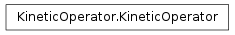
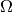
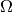
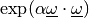
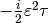
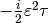
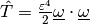
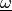
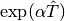

KineticOperator¶
About the KineticOperator class¶
The WaveBlocks Project
@author: R. Bourquin @copyright: Copyright (C) 2010, 2011, 2012, 2013, 2014 R. Bourquin @license: Modified BSD License
Inheritance diagram¶

Class documentation¶
- class WaveBlocksND.KineticOperator(grid, eps=None)¶
This class represents the kinetic operator
 in Fourier space.
in Fourier space.- __init__(grid, eps=None)¶
Compute the Fourier transformation of the position space representation of the kinetic operator
.Parameters: - grid – The position space grid
 of which we compute
its Fourier transform .
of which we compute
its Fourier transform . - eps – The semi-classical scaling parameter
 . (optional)
. (optional)
- grid – The position space grid
- calculate_exponential(factor=1.0)¶
Calculate the exponential  used in the Strang splitting.
Parameters: factor – The prefactor  . It defaults to 1 but is
usually set to 
by the caller.
. It defaults to 1 but is
usually set to 
by the caller.
- calculate_operator(eps=None)¶
Calculate the kinetic operator  in Fourier space.
Parameters: eps – The semi-classical scaling parameter . It has to
be given here or during the initialization of the current instance.
- evaluate_at(grid=None)¶
Evaluate the kinetic operator in Fourier space. This returns an numpy ndarray by using a specific .
Parameters: grid – Unused dummy parameter.
- evaluate_exponential_at(grid=None)¶
Evaluate the exponential  in Fourier space. This returns a numpy ndarray by using a specific . The factor
can be set by the corresponding method.Parameters: grid – Unused dummy parameter.
- get_fourier_grid_axes()¶
Return the grid axes of the Fourier space grid .